| Student | Matrikelnummer | |
|---|---|---|
| Matteo Antonuccio | 1324516 | matteo.antonuccio@hsbi.de |
| Moritz Lützkendorf | 1241228 | moritz.luetzkendorf@hsbi.de |
Das Projekt und seine Repositories finden sich auf Github.
Wir möchten eine Plattform anbieten, mit der Menschen ihren Standort sicher und einfach mit ihren Mitmenschen teilen können. Dabei ist es uns wichtig, ein breites Publikum zu erreichen – für mehr Verbindung, Vertrauen und Sicherheit im Alltag.
Unsere App richtet sich an:
Familien, die sich gegenseitig absichern möchten
Freunde oder Paare, die ihren Standort freiwillig teilen möchten
Eltern, die sehen möchten, ob ihre Kinder sicher in der Schule angekommen sind
Betreuungspersonen, die zum Beispiel Senioren begleiten oder betreuen
Unternehmen, damit sie ihr eigenes Okosystem haben und Daten intern verarbeitet werden.
Wir setzen auf ein minimalistisches Design mit dunklen Farben, um den Akkuverbrauch zu reduzieren. Diese Gestaltung sorgt dafür, dass unsere App auch auf älteren Geräten energieeffizient und stabil läuft.
Viele existierende Standort-Apps stoßen auf wiederkehrende Kritik:
Unsere App löst diese Probleme gezielt durch technische und gestalterische Optimierungen.
Wir verzichten bewusst auf Systeme mit E-Mail-Adressen oder Benutzernamen. Stattdessen funktioniert die Verbindung über einen einmaligen Code, den beide Nutzer gegenseitig austauschen. Die erfolgt entweder durch Scannen oder manuelle Eingabe.
Der Code basiert auf einem sicheren SHA-256 Hash. Damit erhöhen wir die Sicherheit und erschweren unbefugten Zugriff durch Dritte.
Warum nur fünf Observer? Die Begrenzung auf fünf Kontakte sorgt für gezielte Freigaben, erhöht die Übersicht und schützt die Privatsphäre.
Die Benutzeroberfläche wird bewusst einfach gehalten. So können auch Kinder, Senioren und technisch unerfahrene Personen die App problemlos nutzen.
Frühere Standortdaten werden sicher auf unseren Servern gespeichert. Im Ernstfall – etwa bei einer vermissten Person – kann auf diese Daten zugegriffen werden, um sie beispielsweise der Polizei oder Angehörigen zur Verfügung zu stellen.
| Funktion / Relevanz | Name | Kontakt / Verfügbarkeit | Wissen | Interessen / Ziele |
|---|---|---|---|---|
| Entwickler und Gesellschafter, Verantwortlicher für die App-Entwicklung (Frontend, Android-Client) | Matteo Antonuccio | matteo@kidify.de, Montag bis Freitag von 8 bis 18 Uhr erreichbar, Herford | Entwickelt das Frontend und den Android-Client der App | Erfolgreiche Markteinführung der App, benutzerfreundliche Oberfläche |
| Entwickler und Gesellschafter, Verantwortlicher für das Backend und Management-Seite | Moritz Luetzkendorf | moritz@kidify.de, Montag bis Freitag von 8 bis 18 Uhr erreichbar, Herford | Verantwortlich für das Backend und das Bauen der Management-Seite | Stabile Infrastruktur und effizientes Backend für die App und Webclient |
| Testpartner (Altenheime), Feedbackgeber zu Benutzerfreundlichkeit und Barrierefreiheit | Altenheim Herford | kontakt@altenheim-hanse.stadt.de, werktags erreichbar, Herford | Erfahrung in der Arbeit mit älteren Menschen, Fokus auf Barrierefreiheit und einfache Bedienung | Einfache Nutzung, hohe Akzeptanz bei älteren Nutzern, Verbesserung der Lebensqualität |
| Testpartner (Schulen), Feedbackgeber zu Nutzung und Kindersicherheit | Schule Hanse-Stadt Herford | kontakt@schule-hanse.stadt.de, werktags erreichbar, Herford | Erfahrung mit der Nutzung von Apps in Schulen, Fokus auf Sicherheit und Aufsicht | Einfache und sichere Bedienung für Kinder, Förderung von Vertrauen und Kontrolle |
| Regierung (Auftraggeber), Verantwortlich für die Projektfinanzierung und -überwachung | Herr Mustermann | Musterstrasse 10. Detmold 32756, werktags erreichbar, Detmold | Verantwortlich für die Finanzierung und Projektkoordination | Einhaltung der Projektziele, Datenschutz und Sicherheit für die Bürger |
| Nr. | Titel / Kurzbeschreibung | Akteur(e) | Vorbedingung | Beschreibung / Ablauf | Ergebnis / Zielzustand | Priorität | Art der Anforderung |
|---|---|---|---|---|---|---|---|
| F1 | Standortfreigabe | Benutzer | Benutzer ist angemeldet | Der Benutzer kann seinen aktuellen Standort mit Personen teilen. | Standort wird für ausgewählte Kontakte sichtbar. | Hoch | Funktional |
| F2 | Ampel-Status senden | Benutzer | App geöffnet, Benutzer ist angemeldet | Der Benutzer kann den Status "Grün", "Gelb" oder "Rot" über ein Ampelsystem setzen. | Der Status wird in Echtzeit an die Kontakte übermittelt. | Hoch | Funktional |
| F3 | Automatische Standortaktualisierung | System | Standortfreigabe aktiv | Die App aktualisiert alle 10 Minuten automatisch den Standort. | Standortdaten sind aktuell. | Hoch | Funktional |
| F4 | Kontakt per Code hinzufügen | Benutzer | App ist geöffnet | Benutzer kann andere durch Scannen eines Codes oder manuelle Eingabe hinzufügen. | Neuer Kontakt wird zur Liste hinzugefügt. | Mittel | Funktional |
| F5 | Hintergrundfunktionalität | System | App ist gestartet | Die App läuft zuverlässig im Hintergrund weiter, inklusive Standortüberwachung. | Funktionen bleiben auch bei Minimierung aktiv. | Hoch | Funktional |
| F6 | Zugriff auf frühere Standortdaten | Polizei, Angehörige, Regierung | Notfall liegt vor | Berechtigte Personen können bei Notfällen vergangene Standortdaten abrufen. | Historie ist einsehbar und nachvollziehbar. | Hoch | Funktional |
| F7 | Standortfreigabe stoppen / pausieren | Benutzer | Freigabe ist aktiv | Der Benutzer kann jederzeit die Standortfreigabe pausieren oder vollständig beenden. | Standort wird nicht mehr geteilt. | Hoch | Funktional |
| F8 | Technischer Support bei Problemen | Technischer Support | Problem wurde gemeldet | Technischer Support hilft bei technischen Schwierigkeiten mit der App. | Problem ist gelöst, Nutzer erhält Unterstützung. | Mittel | Funktional |
| F9 | Behördenzugriff nur mit Sonderfreigabe | Polizei, Regierung | Notfall & Berechtigung liegt vor | Behörden erhalten ausschließlich im Notfall mit gesonderter Genehmigung Zugriff auf Standortdaten. | Datenschutz ist gewahrt, Zugriff erfolgt nur bei Bedarf. | Hoch | Funktional |
| F10 | Energieeffizienz auf alten Geräten | System | App ist installiert | Die App ist so optimiert, dass sie auch auf älteren Geräten energieeffizient läuft. | Längere Akkulaufzeit, stabile Nutzung. | Mittel | Nicht-funktional |
| F11 | Einfache Bedienung für Kinder & Senioren | Benutzer | App ist installiert | Die Benutzeroberfläche ist intuitiv und vereinfacht für Kinder und ältere Personen. | Alle Nutzergruppen können die App nutzen. | Hoch | Nicht-funktional |
| F12 | Brief zur Verifizierung | System | Registrierung abgeschlossen | Nach Registrierung erhält der Nutzer per Post einen Brief mit Anweisungen zur Verifizierung. | Brief ist angekommen, Nutzer wird zur Verifizierung aufgefordert. | Hoch | Funktional |
| F13 | Verifizierung mit Ausweisdokument | Benutzer | Brief zur Verifizierung erhalten | Der Benutzer lädt zur Verifizierung eine Ausweiskopie hoch. | Nutzer gilt als verifiziert. | Hoch | Funktional |
| F14 | Freischaltung durch technischen Support | Technischer Support | Verifizierung erfolgreich abgeschlossen | Der Support prüft die Verifizierung und gibt den Nutzer anschließend für die App frei. | Nutzer kann App-Funktionen vollständig nutzen. | Hoch | Funktional |
| F15 | Manuelle Standortaktualisierung per Ampel | Benutzer | App geöffnet, Standortfreigabe aktiv | Wenn der Nutzer auf den Ampel-Status tippt, wird der Standort sofort manuell aktualisiert. | Neuer Standort wird sofort an Kontakte übertragen. | Mittel | Funktional |
| F16 | Account dauerhaft löschen | Benutzer | Benutzer ist angemeldet | Der Nutzer kann seinen Account samt aller Daten dauerhaft löschen. | Account und Daten werden vollständig entfernt. | Hoch | Funktional |
| Qualitätsmerkmal | sehr gut | gut | normal | nicht relevant |
|---|---|---|---|---|
| Zuverlässigkeit | X | |||
| Fehlertoleranz | X | |||
| Wiederherstellbarkeit | X | |||
| Ordnungsmäßigkeit | X | |||
| Richtigkeit | X | |||
| Konformität | X | |||
| Benutzerfreundlichkeit | X | |||
| Installierbarkeit | X | |||
| Verständlichkeit | X | |||
| Erlernbarkeit | X | |||
| Bedienbarkeit | X | |||
| Performance | X | |||
| Zeitverhalten | X | |||
| Effizienz | X | |||
| Sicherheit | X | |||
| Analysierbarkeit | X | |||
| Modifizierbarkeit | X | |||
| Stabilität | X | |||
| Prüfbarkeit | X |
Hier sind die User Stories, die die Funktionalität der Benutzeroberfläche beschreiben:
Registrierung und Verifizierung
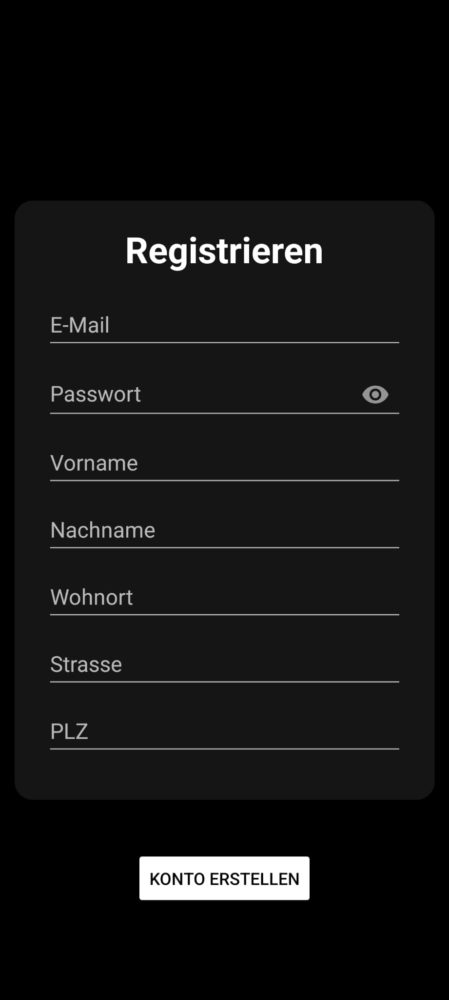
Standortfreigabe
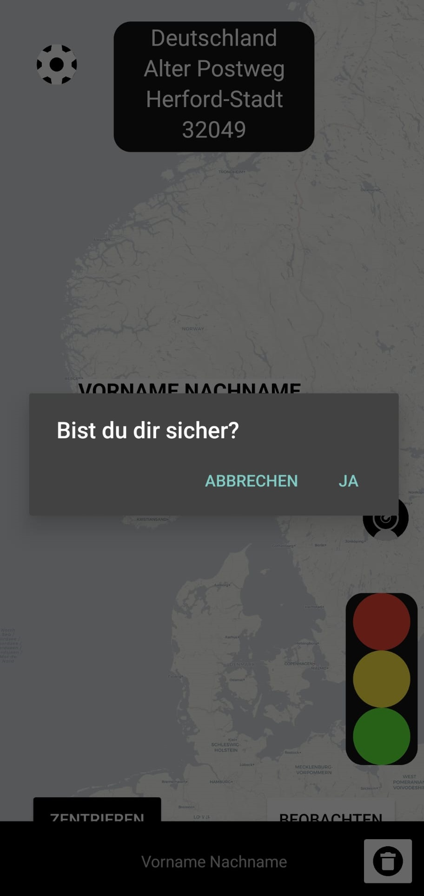
Ampel-Status setzen
Standortfreigabe pausieren oder stoppen
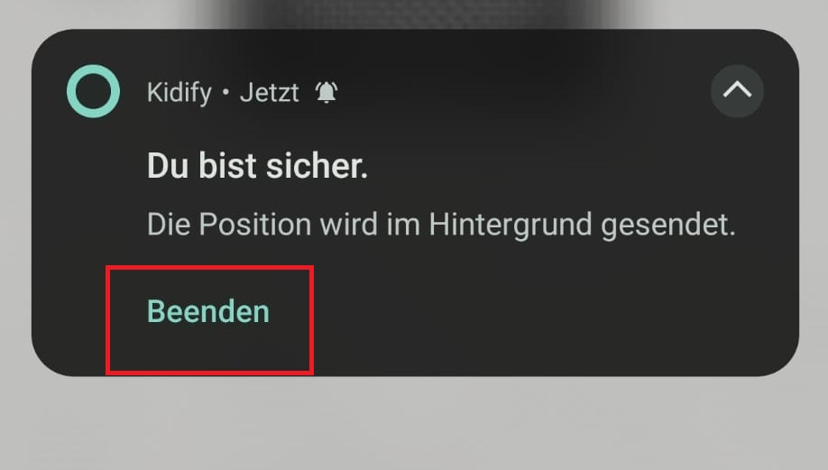
Benutzerfreundlichkeit für Kinder und Senioren
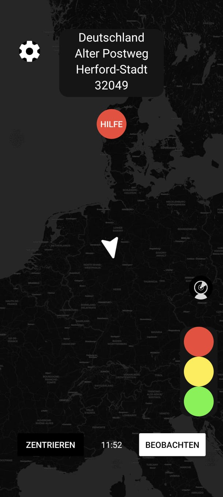
Technischer Support
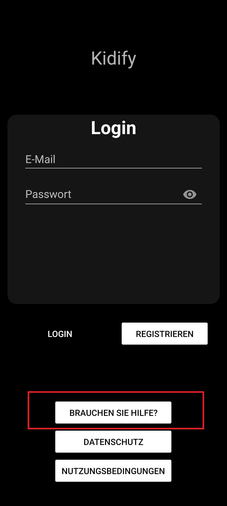
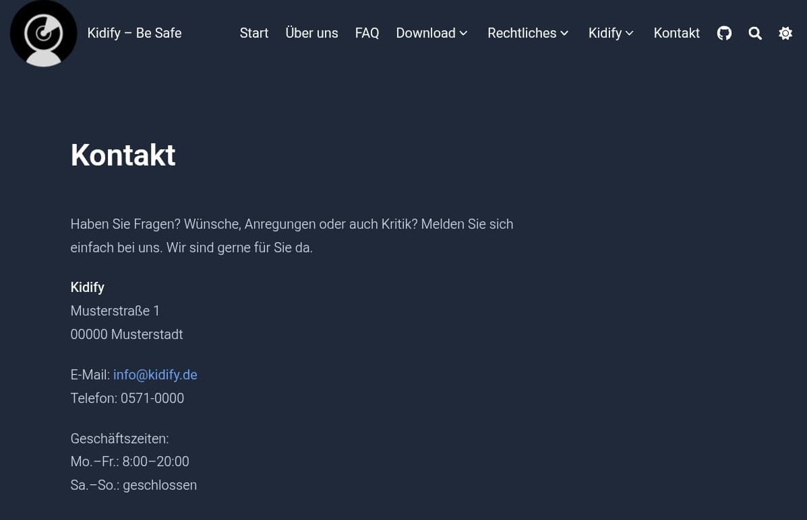
Account dauerhaft löschen
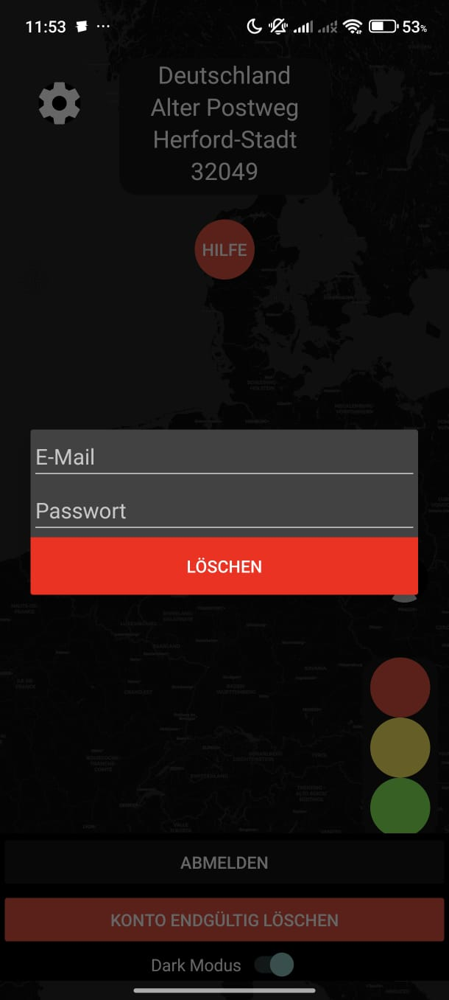
Energieeffizienz auf den Geräten
Verifizierung mit Ausweisdokument
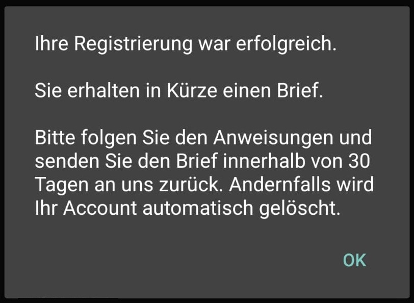
Verifizierung bei der Business Variante
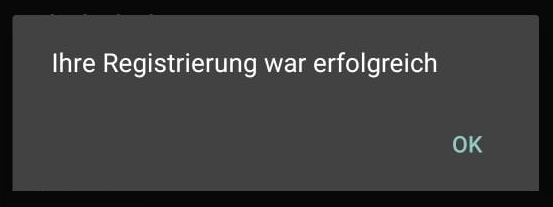
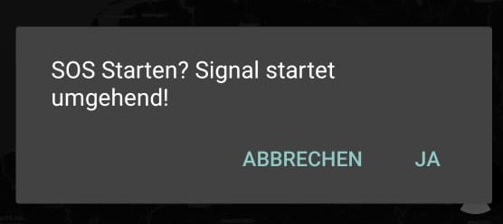
In diesem Abschnitt werden die detaillierten Anforderungen beschrieben, die die Funktionalität und Sicherheit der App betreffen. Hier geht es um die genauen Akzeptanzkriterien, Prioritäten und mögliche Misuse-Stories (Missbrauchsszenarien).
A. Registrierung & Verifizierung
Registrierung und Verifizierung
Verifizierung mit Ausweisdokument
B. Standort & Kontrolle
Standortfreigabe steuern
Standortfreigabe pausieren oder stoppen
C. Statusanzeige & Kommunikation
D. Benutzerfreundlichkeit & Usability
Benutzerfreundliche Oberfläche für Kinder und Senioren
Technischer Support
E. Datenschutz & Energieeffizienz
Account dauerhaft löschen
Energieeffizienz
Standortfreigabe durch Unbefugte
Unautorisierte Accountlöschung
Spam durch Fake-Accounts
Beschreiben Sie hier, welche Frameworks / Technologien / Bibliotheken / Datenformate / Protokolle benutzt werden.
Für die Entwicklung unseres Android-Clients verwenden wir eine Vielzahl von Bibliotheken, die sowohl Standardbibliotheken von Google Android Studio als auch benutzerhinzugefügte Bibliotheken umfassen. Das Datenpaket für die Kommunikation umfasst folgende wichtige Elemente:
Der Android-Client nutzt insgesamt zwei APIs zur Kommunikation:
Unsere hauseigene API, die für das Speichern von Nutzerdaten verantwortlich ist, wie zum Beispiel Koordinaten. Die Koordinaten werden in Form von Längen- und Breitengraden verarbeitet. Zusätzlich verwenden wir die kostenlose Reverse-Geocoding-API "Nominatim" von OpenStreetMap. Diese API wandelt die Koordinaten in lesbare Adressen um.
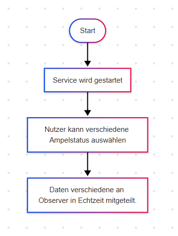
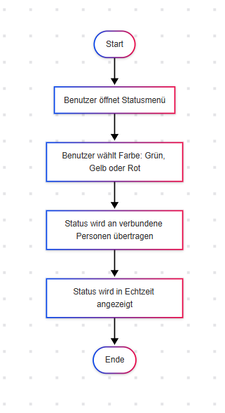
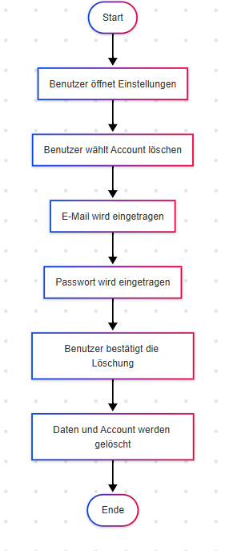
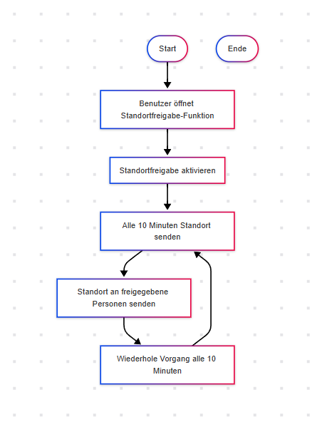
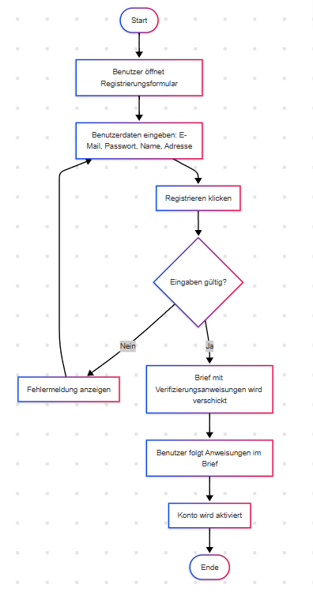
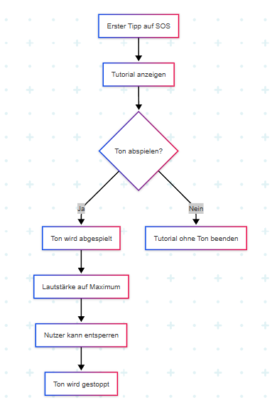
für die Darstellung der Interaktion von Akteuren der Use Cases / User Stories
Testfall 1: Überprüfung des Service-Status
Testfall 2: API-Integration für Service-Status
Testfall 1: Ampel-Status aktualisieren
Testfall 2: API-Integration für Ampel-Status
Testfall 1: Konto löschen Funktion
Testfall 2: API-Integration für Konto löschen
Testfall 1: Standortfreigabe Funktion
Testfall 2: API-Integration für Standortfreigabe
Für die Webseite wurde Hugo verwendet, um schnell und unkompliziert Webseiten zu erstellen. Eine neue Seite wird in Markdown geschrieben und von Hugo in HTML formatiert. Der Server (hier VPS) läuft mit Debian Linux. Die Datenbank ist eine PostgreSQL-Installation. Für die RestAPI wird PostgREST verwendet in der Version 12.2.8. nginx wird in der Version 1.22.1 verwendet. Bei der Entwicklung der Android-App wurde Android Studio verwendet und es wurde die Programmiersprache Java verwendet. Für die Wartung des Servers wurde ein Standart-Terminal unter Linux und SSH verwendet. Das Schreiben der Texte für die Webseite erfolgte im Texteditor vim.
Auf Github finden sich unter dem Link https://github.com/Kidify-Be-Safe die verschiedenen Repositories zu dem Android-Client und weiteres.
Die internen Softwareanforderungen sind eine stabile Software, die bei einem Teilausfall der Komponenten nicht zu einem komplett Ausfall führt. Zum Beispiel, dass die App weiterhin gestartet werden, obwohl keine Verbindung zur Datenbank besteht. Da der Datenaustausch über eine API erfolgt, muss eine konstante Internetverbindung bestehen und der Server muss jederzeit zu erreichen sein. Ein Serverausfall führt zu einen Dienstausfall und die App kann zwar geöffnet werden, jedoch sind die Funktionen als Standortsender und -empfänger nicht verfügbar bzw. aufgrund der fehlenden Verbindung zur Datenbank nicht ausführbar.
| Komponent | Person |
|---|---|
| Android-App | Matteo Antonuccio |
| Datenbank | Moritz Lützkendorf |
| Webseite und Server | Moritz Lützkendorf |
Bei einer Gruppengröße von zwei Personen lässt sich lassen sich die Rollen weniger gut verteilen, da es aufgrund der kleinen Gruppengröße es zu einer Mehrbelastung kommen würde. Dennoch ist jedes Gruppenmitglied für das Projekt gleich verantwortlich. Die Kommunikation bei zwei Personen kann schneller erfolgen als in größeren Gruppen. Es ist möglich, dass sich spontaner über das Projekt ausgetauscht werden kann und es können unkomplizierter Meetings abgehalten werden oder kurze Nachrichten ausgetauscht werden. Es muss nicht abgestimmt werden, wann es für alle am besten passt, was bei einer größeren Gruppe berücksichtigt werden muss. Im Team waren beide Mitglieder für das Projekt in technischer Hinsicht als auch in organisatorischer Hinsicht verantwortlich. Aufgrund der Gruppengröße konnten die Verantwortlichkeiten weniger in kleine Stücke aufgeteilt werden. Dies spiegelt jedeglich die eigene Meinung wieder.
Der Software-Entwickler entwickelt die App und pflegt diese. Er fügt gegebenenfalls neue Features hinzu oder behebt Fehler, die die Funktionalität beeinträchtigen oder Fehler im UI. Der Software-Entwickler testet die App auf Fehler und prüft, ob die Funktionen ihre Zweck erfüllen.
Der Server-Admin wartet und pflegt den Server und seine Software. Er installiert, falls benötigt, die benötigten Programme und Pakete. Er spielt Updates ein und sorgt für einen regungslosen Ablauf. Da auf den Servern die Webseite und die Datenbank läuft,
Der Datenbankadministrator kümmert sich um die Datenbank, indem er neue Tabellen und Views erstellt und Berechtigungen auf diese an die gewünschte Person erteilt. Er wartet die Datenbank, pflegt diese und erstellt regelmäßge Updates. Fehlende Updates können zu Datenverlusten führen. Der Datenbank-Admin muss sich mit dem Software-Entwickler absprechen, welche Schnittstellen benutzt werden, damit die Daten zwischen der App und der Datenbank ausgetauscht werden können. Es muss klar kommunizert werden, welches Protokoll verwendet wird und über welche Domain (bei der RestAPI) die Daten ausgetauscht werden. Bei der RestAPI überschneiden sich die Aufgaben des Datenbankadministrators und des Serveradministrators, da für die RestAPI ein Programm auf dem Server installiert werden muss und mit nginx die Datenbank nach außen zugänglich gemacht wurde.
Der Webseiten-Entwickler kümmert sich um die Präsenz des Projektes im Internet. Er gestaltet die Webseite und füllt diese mit wichtigen Informatioen zu dem Projekt (diese Aufgaben können teils auch von einem potentiellen Social-Media-Team) übernommen werden. Die Erstellung eines Blogs für die Außendarstellung wäre mit Hugo möglich.
Da bei einer Gruppengröße von zwei Personen es einfacher ist, dass beide Personen die Projektorganisation übernehmen und beide in gleichem Maße für das Projekt verantwortlich sind. Eine Aufteilung in einzelne Rollen würde das Projekt zusätzlich verkomplizieren. Bei einer größeren Gruppe, würde es sich anbieten die Aufgaben und Rollen aufzuteilen. Somit sind beide Gruppenmitglieder für den reibungslosen Ablauf und Plannung des Projekts zuständig und tragen beide die gleiche Verantwortung gegenüber das Projekt. Es fand ein regelmäßger Austausch über Messenger statt sowie Meetings, um die Tabellen und Views für die Datenbank zu besprechen, da diese für die Funktion der App wichtig sind. Ebenso wurde sich regelmäßig über den derzeitigen Stand des Projektes ausgetauscht.
| Name | Rolle |
|---|---|
| Matteo Antonuccio | Software-Entwickler (Android) und Projektorganisation |
| Moritz Lützkendorf | Datenbank, Server, Webseite und Projektorganisation |
KW 14 Besprechung des Projektes
KW 16 (19.04.2025)
KW 26 (24.06.) -Evaluierung der App
KW 26 Abgabe des Projekts
Für die Bilder auf der Webseite wurden Bilder aus dem Internet verwendet:
https://image.stern.de/8204800/t/aU/v2/w1440/r1.3333/-/grossraumbuero.jpg
https://katrinheyer.de/wp-content/uploads/2015/06/architekturfotografie-buerogebaeude-aussenansicht-gesamt.jpg